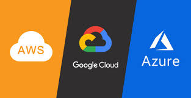
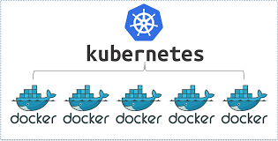
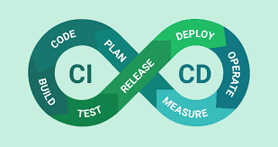
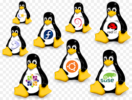
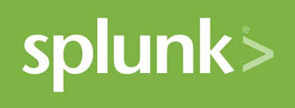
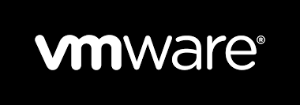

Terraform is an open-source infrastructure as code software tool created by HashiCorp. AWS CloudFormation is a service that gives developers and businesses an easy way to create a collection of related AWS and third-party resources, and provision and manage them in an orderly and predictable fashion.

The most popular cloud computing platforms are Amazon Web Services (AWS), Microsoft Azure, and relative newcomer, Google Cloud Platform (GCP). When comparing services from each of these platforms, it’s important to consider the size and goals of your company, your expected growth rate, and your budget.

Chef – Chef Server works only on Linux/Unix but Chef Client and Workstation can be on windows as well. Puppet – Puppet Master works only on Linux/Unix but Puppet Agent also works on windows. Ansible – Ansible supports windows machines as well but the Ansible server has to be on Linux/Unix machine.Like Chef, Ansible uses declarative files (called modules) to define the final state of your systemsChef, Puppet, Ansible, and SaltStack are all configuration management tools.Ansible is PUSH based tool.

Docker is a set of platform as a service products that use OS-level virtualization to deliver software in packages called containers. Containers are isolated from one another and bundle their own software, libraries and configuration files; they can communicate with each other through well-defined channels.

Jenkins is a free and open source automation server. It helps automate the parts of software development related to building, testing, and deploying, facilitating continuous integration and continuous delivery. It is a server-based system that runs in servlet containers such as Apache Tomcat.

Linux is a family of open-source Unix-like operating systems based on the Linux kernel, an operating system kernel first released on September 17, 1991, by Linus Torvalds. Linux is typically packaged in a Linux distribution.Linux is the best-known and most-used open source operating system. As an operating system, Linux is software that sits underneath all of the other software on a computer, receiving requests from those programs and relaying these requests to the computer's hardware.
Nagios Core, formerly known as Nagios, is a free and open-source computer-software application that monitors systems, networks and infrastructure. Nagios offers monitoring and alerting services for servers, switches, applications and services. .

Splunk is centralized logs analysis tool for machine generated data, unstructured/structured and complex multi-line data which provides features.
Cisco Webex is an American company that develops and sells web conferencing and videoconferencing applications. It was founded as WebEx in 1995 and taken over by Cisco Systems in 2007. Its headquarters are in Milpitas, California.

GitHub, Inc. is a subsidiary of Microsoft which provides hosting for software development and version control using Git. It offers the distributed version control and source code management functionality of Git, plus its own features.GitHub Free now includes unlimited private repositories. For the first time, developers can use GitHub for their private projects with up to three collaborators per repository for free.
Gmail vs Outlook: Conclusion If you want a streamlined email experience, with a clean interface, then Gmail is the right choice for you. If you want a feature-rich email client that has a bit more of a learning curve, but has more options to make your email work for you, then Outlook is the way to go.

VMware, Inc. is an American publicly traded software company from California. It provides cloud computing and virtualization software and services. It was one of the first commercially successful companies to virtualize the x86 architecture.